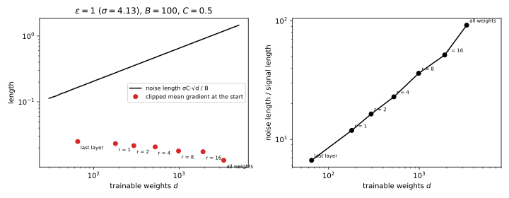

43 Public data and private fine-tuning
43.1 Why this matters
The previous chapters trained models with differential privacy (DP) from random weights, by stochastic gradient descent (SGD) with per-example clipping and Gaussian noise, called DP-SGD, as in DP-SGD: every step adds Gaussian noise to a sum of clipped per-example gradients, and an accountant turns the steps into one \((\varepsilon, \delta)\). On the part’s running example it costs little at \(\varepsilon = 8\) and a great deal at \(\varepsilon = 1\) and below. The most accurate private models in the literature are not trained that way. They start from a model pretrained non-privately on a large public dataset, such as text or images collected from the web, and only fine-tune it privately on the sensitive data. Private image classifiers and private language models fine-tuned this way are far more accurate, at the same \(\varepsilon\), than the same models trained privately from scratch (Tramèr & Boneh 2021; Yu et al. 2022; Li et al. 2022; De et al. 2022).
This chapter asks why that helps so much, and why a second practice helps on top of it: fine-tuning only a small part of the model, such as the last layer or a low-rank update to each weight matrix, often beats fine-tuning all of it under DP, although without privacy it would usually be the other way round.
43.1.1 The one idea: the noise is paid per trainable direction, the signal is not
DP-SGD adds noise of the same size to every coordinate it updates: with noise multiplier \(\sigma\), clipping norm \(C\) and expected batch size \(B\), the noise on the averaged gradient has standard deviation \(\sigma C/B\) in each of the \(k\) trainable coordinates, so its length is about \(\sigma C\sqrt k/B\). The useful part of the gradient, the average over the records, does not grow with \(k\): it has length at most \(C\) whatever the number of coordinates, and it is usually concentrated in a few directions. Every trainable coordinate that the task does not need is a coordinate that only collects noise.
Public data helps in two ways that both follow from this. First, it moves the starting point close to a good model, so that what remains to be learned privately is small and lies in few directions. Second, it tells you which directions those are, before you touch the private data and at no privacy cost: the last layer on top of good features, a low-rank update, or the top principal directions of public gradients. Restricting training to those directions cuts the noise without cutting the signal. Whether it is worth restricting depends on how much of the signal the restriction throws away, and that is what decides between fine-tuning all weights and fine-tuning a few.
Table 43.1 lists the results and where each is used.
| Result | Where it is used |
|---|---|
| The noise’s length grows like \(\sqrt k\); its cost grows with the number of directions it has time to fill, \(d_{\text{eff}}\) | Deciding how many weights to train; why full fine-tuning can still work |
| A linear model on fixed features is private convex empirical risk minimization (ERM) | Linear probing; when features from public data suffice |
| A low-rank adapter has \(r(d_{\text{in}} + d_{\text{out}})\) weights and outer-product gradients | Parameter-efficient private fine-tuning; ghost clipping of adapters |
| Private gradients lie near a public low-dimensional subspace | Projected DP-SGD and gradient embedding; why fine-tuning is low-dimensional |
| Pretraining and fine-tuning on the running example | What each strategy buys at each \(\varepsilon\) |
| The guarantee covers the private data only | What to check about “public” data before relying on it |
Notation. As in DP-SGD: \(n\) private records, \(C\) the clipping norm, \(\sigma\) the noise multiplier, \(q\) the sampling rate, \(B = qn\) the expected batch size, \(T\) the number of steps and \(\eta\) the step size. The model has \(p\) weights, of which \(k\) are trainable during private fine-tuning; the others are frozen at their pretrained values. \(s = \sigma C/B\) is the noise standard deviation per coordinate on the averaged gradient. \(D_{\text{pub}}\) is the public dataset, used freely, and \(D\) the private one. \(H\) is the curvature (Hessian) of the training loss at the starting point, with eigenvalues \(h_1 \ge h_2 \ge \dots\). Neighbouring private datasets differ by adding or removing one record.
The running example. The private task is the part’s running example: 50-dimensional standard normal inputs labelled by a fixed random teacher network with 8 hidden tanh units, \(n = 10{,}000\) training records, and a student with 64 hidden tanh units and \(p = 3{,}329\) weights. The public task, built for this chapter, has 50,000 inputs from the same distribution labelled by a related teacher, which shares most of the private teacher’s structure but not all of it; Section 43.7 gives the details. Pretraining on it helps on the private task without solving it. Fine-tuning runs DP-SGD with \(q = 0.01\), \(C = 0.5\) and \(T = 10{,}000\) steps, the part’s configuration, at \(\delta = 10^{-5}\).
How to read this chapter. Read the toolkit and Section 43.3, which explains the rest. Section 43.4 and Section 43.5 are the two standard ways to train few weights; Section 43.6 explains why training all of them can still work. Section 43.7 runs everything on the running example, and Section 43.8 says what the guarantee does and does not cover. Read the last one even if you skip the others.
43.2 Toolkit: four facts every derivation uses
43.2.1 Fact 1 — DP-SGD’s guarantee depends on the clipped sum, not on which weights it updates
Each step of DP-SGD releases \(\sum_{i \in S_t}\bar g_i + \mathcal N(0, \sigma^2C^2I)\), where \(\bar g_i\) is record \(i\)’s gradient clipped to length at most \(C\) and \(S_t\) is a Poisson-sampled batch. Adding or removing one record changes the sum by one clipped gradient, of length at most \(C\), so the noise is \(\sigma\) times the sensitivity, and the accountant composes the steps into \((\varepsilon, \delta)\) from \(q\), \(\sigma\) and \(T\) alone (DP-SGD). Nothing in this argument depends on what the gradient is a gradient of: all weights, the last layer, the factors of a low-rank update, or a projection of the gradient onto a fixed subspace. The clipping simply applies to the vector of trainable coordinates, whatever it is. With \(q = 0.01\) and \(T = 10{,}000\), the accountant gives \(\sigma = 7.72\), 4.13, 2.28 and 0.917 for \(\varepsilon = 0.5\), 1, 2 and 8 at \(\delta = 10^{-5}\).
43.2.2 Fact 2 — A Gaussian vector’s length grows like the square root of its dimension, and a projection keeps it Gaussian
If \(\xi \sim \mathcal N(0, s^2I_k)\), then \(\mathbb E\|\xi\|^2 = ks^2\), a sum of \(k\) squared coordinates each with mean \(s^2\), and \(\|\xi\|\) concentrates near \(s\sqrt k\) (Concentration inequalities). If \(P\) is the orthogonal projection onto a fixed \(m\)-dimensional subspace, then \(P\xi\) is again Gaussian, with standard deviation \(s\) along each of \(m\) orthonormal directions of the subspace and nothing outside it. The reason is rotation invariance: the density of \(\xi\) depends only on \(\|\xi\|\), so in any orthonormal basis its coordinates are independent \(\mathcal N(0, s^2)\), and the projection keeps \(m\) of them. So noise restricted to a subspace has length about \(s\sqrt m\).
43.2.3 Fact 3 — Public data is free, and so is anything computed from it
DP bounds how the output’s distribution changes when one private record changes. A computation that reads only public data, such as pretraining, choosing a subspace from public gradients or tuning on a public validation set, produces a fixed object as far as the private data are concerned, and using it as the starting point or a hyperparameter of a private algorithm costs nothing. In the DP-SGD proof this enters as the condition that the initial weights \(w_0\) are chosen independently of the private data (DP-SGD). Anything computed afterwards from the private algorithm’s output is post-processing (Post-processing, group privacy and composition).
43.2.4 Fact 4 — A dense layer’s per-example gradient is an outer product
For a layer that maps an input \(a \in \mathbb R^{d_{\text{in}}}\) to \(Wa\), the gradient of record \(i\)’s loss with respect to \(W\) is \(\delta_ia_i^\top\), where \(\delta_i\) is the gradient with respect to the layer’s output, and its length is \(\|\delta_i\|\,\|a_i\|\), because the squared entries \(\delta_{ij}^2a_{il}^2\) sum to \((\sum_j\delta_{ij}^2)(\sum_l a_{il}^2)\). Clipping can therefore compute each record’s gradient norm without forming the gradient, ghost clipping (DP-SGD).
43.3 Why dimension costs, and when it does not
43.3.1 Context
Every bound on private learning in this part grows with the dimension. Private empirical risk minimization shows that the best excess risk achievable under \((\varepsilon, \delta)\)-DP grows like \(\sqrt d\) for convex Lipschitz losses and like \(d\) for strongly convex ones. Matching lower bounds hold up to logarithmic factors. The noise in DP-SGD has length \(\sigma C\sqrt k/B\), growing with the number of trainable weights. Yet large pretrained language models with hundreds of millions of weights are fine-tuned privately with good results. How much does each trainable direction really cost, and what decides it?
43.3.2 Statement
The noise on the averaged gradient, restricted to the \(k\) trainable coordinates, has length \[\|\xi_t\|/B \approx s\sqrt k = \frac{\sigma C\sqrt k}{B}. \tag{43.1}\] Near the starting point, model the loss as a quadratic with curvature \(H\). Then \(T\) steps of noisy gradient descent with step size \(\eta\) and noise of standard deviation \(s\) per coordinate raise the expected loss, compared with the same steps without noise, by \[\Delta = \sum_{j=1}^k\frac{\eta s^2}{2(2 - \eta h_j)}\Big(1 - (1 - \eta h_j)^{2T}\Big) \approx \frac{\eta s^2}{4}\,d_{\text{eff}}, \qquad d_{\text{eff}} = \sum_{j=1}^k\Big(1 - (1 - \eta h_j)^{2T}\Big), \tag{43.2}\] where \(h_j\) are the eigenvalues of \(H\) restricted to the trainable coordinates, \(0 \le h_j < 2/\eta\), and the approximation assumes \(\eta h_j \ll 1\). The effective dimension \(d_{\text{eff}}\) satisfies \[d_{\text{eff}} \le \min\Big(k,\ 2\eta T\operatorname{tr}H\Big). \tag{43.3}\]
43.3.3 Derivation
The idea is to follow the noise separately from the signal. On a quadratic, the dynamics are linear, so the noise’s contribution to the weights is a sum of independent Gaussian kicks, each shrunk by the curvature. Directions with high curvature forget old kicks quickly and reach a steady state; directions with almost no curvature keep accumulating kicks but charge very little for them.
- Separate the noise. On the quadratic \(J(w) = J(w_*) + \frac12(w - w_*)^\top H(w - w_*)\) the gradient is \(H(w - w_*)\). Let \(w_t\) follow the noisy steps \(w_{t+1} = w_t - \eta(H(w_t - w_*) + \xi_t)\) and \(\bar w_t\) the same steps without noise, from the same start. Their difference \(e_t = w_t - \bar w_t\) obeys \(e_{t+1} = (I - \eta H)e_t - \eta\xi_t\) with \(e_0 = 0\), because the terms with \(w_*\) are the same for both and cancel. So \(e_t\) is a linear function of the noise alone, a Gaussian with mean zero.
- The loss increase. Expanding the quadratic around \(\bar w_T\), \(J(w_T) = J(\bar w_T) + \nabla J(\bar w_T)^\top e_T + \frac12e_T^\top He_T\). The middle term has mean zero, because \(e_T\) has mean zero and is independent of the deterministic \(\bar w_T\). So \(\Delta = \frac12\mathbb E[e_T^\top He_T]\).
- One direction at a time. In the eigenbasis of \(H\) the coordinates decouple, and by Fact 2 each coordinate of the noise is still \(\mathcal N(0, s^2)\), independently. Along an eigenvector with curvature \(h\), the coordinate \(e\) of the error obeys \(e_{t+1} = (1 - \eta h)e_t - \eta\xi\), so after \(T\) steps it is \(-\eta\sum_{t<T}(1 - \eta h)^{T - 1 - t}\xi_t\), with variance \[v_T = \eta^2s^2\sum_{t=0}^{T-1}(1 - \eta h)^{2t} = \eta^2s^2\,\frac{1 - (1 - \eta h)^{2T}}{1 - (1 - \eta h)^2}, \tag{43.4}\] a geometric sum.
- Its cost. The direction contributes \(\frac12hv_T\) to \(\Delta\). Since \(1 - (1 - \eta h)^2 = \eta h(2 - \eta h)\), this is \(\frac{\eta s^2}{2(2 - \eta h)}(1 - (1 - \eta h)^{2T})\), and summing over the directions gives Equation 43.2. With \(\eta h \ll 1\) the first factor is \(\eta s^2/4\).
- Two limits. For \(2\eta hT \gg 1\) the bracket is 1: the direction is at its steady state, the case Private empirical risk minimization analyses, and it costs \(\eta s^2/4\) whatever its curvature (stiffer directions wander less but charge more per unit of wandering). For \(2\eta hT \ll 1\) the bracket is about \(2\eta hT\), by \((1 - x)^{2T} \approx 1 - 2Tx\), and the direction costs about \(\frac{\eta s^2}{4}\cdot 2\eta hT\): the noise has random-walked a distance of variance \(T\eta^2s^2\), charged at rate \(h/2\), which is small when the direction is flat.
- The bound. Each bracket is at most 1, which gives \(d_{\text{eff}} \le k\). And \(1 - (1 - x)^{2T} \le 2Tx\) for \(0 \le x \le 1\) (Bernoulli’s inequality, \((1 - x)^{2T} \ge 1 - 2Tx\)), so \(d_{\text{eff}} \le 2\eta T\sum_jh_j = 2\eta T\operatorname{tr}H\).
43.3.4 Interpretation
The count of trainable weights is an upper bound, not the price. Equation 43.2 says that noise in a direction the loss does not care about, \(h_j \approx 0\), costs nothing, however long it is. What you pay for is roughly the number of directions whose curvature exceeds \(1/(2\eta T)\), the directions the noise has time to fill. A large pretrained model whose loss is curved in only a few directions near the pretrained weights can be fine-tuned in all its weights at a cost set by those few. This is the explanation Li, Liu, Hashimoto, Inan, Kulkarni, Lee & Thakurta (2022) give for why private fine-tuning of large language models does not suffer from their size: the optimal rates of Private empirical risk minimization are worst cases over all losses with a given Lipschitz constant, and they replace the dimension \(d\) by a quantity that measures how the gradients spread over directions.
Fewer trainable weights still help, for two reasons. Freezing weights removes their directions from the sum, so \(d_{\text{eff}}\) can only fall. And clipping happens to the trainable gradient: with fewer coordinates, per-example gradients are shorter, fewer are clipped, and the average clipped gradient, the signal, can be longer. Both effects appear in the example below. Against them stands the bias of freezing: if the task needs a direction that is frozen, no amount of private data can move it.
The step size and the number of steps are part of the dimension. \(d_{\text{eff}}\) grows with \(\eta T\): a longer or more aggressive run fills more flat directions with noise. This is one reason private fine-tuning works best with smaller step sizes than private training from scratch, as Section 43.7 finds.
How good is the model? The quadratic is a local model, accurate while fine-tuning stays near its starting point; the loss of a network is not quadratic far from it. And the loss increase is not an accuracy loss: accuracy changes only when noise flips predictions. Use Equation 43.2 to compare strategies, not to predict accuracy.

43.3.5 Example: the running example after pretraining
Table 43.2 gives the noise length Equation 43.1 for the three trainable sets of Section 43.7, with \(B = 100\) and \(C = 0.5\).
| \(\varepsilon\) | \(\sigma\) | All weights, \(k = 3{,}329\) | Rank-4 adapter and last layer, \(k = 525\) | Last layer, \(k = 65\) |
|---|---|---|---|---|
| 0.5 | 7.72 | 2.227 | 0.884 | 0.311 |
| 1 | 4.13 | 1.191 | 0.473 | 0.166 |
| 2 | 2.28 | 0.658 | 0.261 | 0.092 |
| 8 | 0.917 | 0.265 | 0.105 | 0.037 |
The signal is the average clipped gradient over the private records at the start of fine-tuning. From the pretrained weights its length is 0.0130 when all weights are trained, 0.0207 for the adapter and 0.0250 for the last layer alone (Figure 43.1). The last layer’s 65 coordinates carry a longer average clipped gradient than all 3,329 coordinates together, because each record’s gradient restricted to 65 coordinates is shorter and less often clipped. At \(\varepsilon = 1\) the noise is 92.0 times the signal for all weights, 22.9 times for the adapter and 6.7 times for the last layer. By the break-even argument of DP-SGD, a signal of constant direction outgrows a random walk of noise after \((\text{noise}/\text{signal})^2\) steps: 8,455, 523 and 44 steps. From a random initialization the signal is 0.0618, five times longer than from the pretrained weights, because a random network gets many records wrong and their gradients are long; but it shrinks quickly as training proceeds, to 0.026 after 1,000 steps in DP-SGD.
The curvature tells a less pessimistic story. Take the Gauss–Newton curvature of the private loss at the pretrained weights: the Hessian of the logistic loss with the network replaced by its linearization around the current weights, the average over records of \(\pi_i(1 - \pi_i)\nabla f_i\nabla f_i^\top\), with \(f_i\) the network’s output on record \(i\) and \(\pi_i\) its predicted probability. It is positive semi-definite, and near a good fit it is close to the full Hessian, which is what the quadratic model needs. Estimated from 2,000 private records, it has largest eigenvalue 0.723 and trace 16.310 over all weights; for the last layer alone the largest eigenvalue is 0.142 and the trace 0.681. With \(\eta = 0.1\) and \(T = 10{,}000\), only 406 of the 3,329 directions have curvature above \(1/(2\eta T) = 5 \times 10^{-4}\), and \(d_{\text{eff}} = 451\); for the last layer, \(d_{\text{eff}} = 60.2\) of 65. The full model’s noise is \(\sqrt{3{,}329/65} = 7.2\) times longer than the last layer’s, but by Equation 43.2 it costs only \(451/60.2 = 7.5\) times more, not \(3{,}329/65 = 51\) times. At \(\varepsilon = 1\), where \(s = 0.0206\), Equation 43.2 predicts a loss increase of 0.0048 for all weights at \(\eta = 0.1\), against 0.0355 if every direction had reached its steady state, and 0.00064 for the last layer alone.
43.3.6 Check yourself
- You double the number of steps at the same \(\sigma\) (ignoring that this would raise \(\varepsilon\)). Which directions’ noise cost changes? (Only the flat ones, \(2\eta hT \lesssim 1\), whose cost doubles roughly; directions already at their steady state cost the same.)
- Why does \(d_{\text{eff}} \le 2\eta T\operatorname{tr}H\) not help much in the running example? (Because \(2\eta T\operatorname{tr}H = 2 \times 0.1 \times 10{,}000 \times 16.31 = 32{,}620\), far above \(k = 3{,}329\). The trace is dominated by a few large eigenvalues; the bound is useful only when the total curvature is small compared with \(1/(\eta T)\).)
43.4 Good features: the last layer as private convex ERM
43.4.1 Context
The simplest way to use a pretrained model is to freeze everything except the last layer and train a linear classifier on the frozen features, linear probing. For the running example that is logistic regression on the 64 hidden activations plus a bias, 65 weights. It turns private deep learning back into the convex problem of Private empirical risk minimization, where the rates and the methods are known. Tramèr & Boneh (2021) showed that this simple recipe beats end-to-end private training of convolutional networks on standard image benchmarks at moderate budgets, even with handcrafted features (the ScatterNet wavelet transform), and that features learned on public data do better still. What does the private part of a linear probe cost, and what limits it?
43.4.2 Statement
Let \(\phi(x) \in \mathbb R^k\) be the frozen features, computed from public data only, and \(\ell(w, (x, y)) = \ln(1 + e^{-y\langle w, \phi(x)\rangle})\). Then:
- The per-record gradient has length at most \(\|\phi(x)\|\). For \(k - 1\) tanh features and a constant 1, \(\|\phi(x)\| \le \sqrt k\), so the loss is \(\sqrt k\)-Lipschitz in \(w\) and clipping is optional.
- The excess risk of a private probe splits into a feature gap and a privacy cost: \[R(\tilde w) - R_{\text{best}} = \underbrace{R(w^\phi) - R_{\text{best}}}_{\text{features}} + \underbrace{R(\tilde w) - R(w^\phi)}_{\text{privacy}}, \tag{43.5}\] where \(R\) is the risk, \(R_{\text{best}}\) the best risk of any model, and \(w^\phi\) the best linear model on the features \(\phi\). The first term does not depend on \(n\) or \(\varepsilon\). The second is private convex ERM in \(k\) dimensions. Take losses that are \(L\)-Lipschitz over a ball of radius \(R_w\). Noisy projected gradient descent keeps the privacy cost below a constant times \(LR_w\sqrt{k\ln(1/\delta)}/(n\varepsilon)\). No private algorithm can do better than order \(LR_w\sqrt k/(n\varepsilon)\) (Bassily, Smith & Thakurta 2014).
43.4.3 Derivation
- The gradient bound. \(\nabla_w\ell = \ell'(m)\,y\,\phi(x)\) with \(m = y\langle w, \phi(x)\rangle\) the margin and \(\ell'(m) = -1/(1 + e^m) \in (-1, 0)\). So \(\|\nabla_w\ell\| \le \|\phi(x)\|\). Each tanh activation lies in \((-1, 1)\), so \(\|\phi(x)\|^2 < (k - 1) + 1 = k\).
- The split. Add and subtract \(R(w^\phi)\). The first difference compares two non-private quantities and contains no noise.
- The privacy term. By Fact 3, \(\phi\) is a fixed function, so the probe is an ordinary convex ERM problem on the transformed records \((\phi(x_i), y_i)\), with dimension \(k\) and Lipschitz constant \(\sqrt k\) or the clipping norm. The upper bound is the one Private empirical risk minimization derives for noisy projected gradient descent, and the lower bound is Bassily, Smith & Thakurta’s (2014). The Lipschitz constant and the dimension enter through the noise \(\propto L\sqrt k\) that every private method must add.
43.4.4 Interpretation
Features cap accuracy; privacy only decides how close you get to the cap. The feature gap is the price of freezing, paid even with infinite data and no privacy. The privacy cost falls like \(\sqrt k/(n\varepsilon)\). With few features and good ones, both are small; with few features and poor ones, the probe is private, cheap and bad. This is the trade-off behind the title of Tramèr & Boneh’s paper: private learning needs better features, or much more data. End-to-end training can eventually beat a probe, because it can learn better features, but it pays for every one of its weights to do so, and at small \(\varepsilon\) and small \(n\) it does not catch up.
Why linear probing is the safe first baseline. The problem is convex, so the optimizer cannot wander into a bad region, and the theory of Private empirical risk minimization applies: output perturbation, objective perturbation and noisy gradient descent all work, with known rates and no clipping bias if you use the Lipschitz bound. It has few hyperparameters, and with very few weights it can even be run full-batch. If a probe on public features is already within your accuracy target, there is little reason to fine-tune more.
Clipping below the Lipschitz bound still pays. The bound \(\sqrt k\) is a worst case: it is reached only by a record with every activation saturated and a large negative margin. Most records’ gradients are much shorter, because a record classified with a wide margin has \(|\ell'(m)|\) close to 0. Clipping at a smaller \(C\) biases the gradient of the few long ones and divides the noise by \(\sqrt k/C\); Exercise 3 compares the two on the running example.
43.4.5 Example: the ceiling and the cost on the running example
The pretrained network’s 64 hidden units plus a constant give \(k = 65\) features; the largest feature norm on the private training records is 7.035, below the bound \(\sqrt{65} = 8.062\). The pretrained network itself, with its public last layer, labels 0.9035 of the private test inputs correctly (the report half, Section 43.7). Fitting the last layer exactly and non-privately on the 10,000 private records, by Newton’s method, raises this to 0.9536: that is the probe’s ceiling, \(w^\phi\) in Equation 43.5. A network trained non-privately on the private data from scratch reaches 0.9606, so the feature gap is 0.007 in accuracy. The private probe reaches 0.9478 at \(\varepsilon = 0.5\) and 0.9514 at \(\varepsilon = 8\) (Table 43.5): at every budget it is within 0.006 of its ceiling, and at no budget can it pass it.
43.4.6 Check yourself
- The public features are replaced by 650 features of the same quality (same ceiling). What happens to the privacy cost of the probe? (The noise length grows by \(\sqrt{10} \approx 3.2\) at the same \(\sigma\), so the privacy term of Equation 43.5 grows by about that factor at a fixed \(n\varepsilon\); you need about 3.2 times more data for the same cost.)
- Is the probe private if the features were computed by a network pretrained on data that included some of the private records? (The probe is private with respect to the private dataset given the features; but the features themselves are a function of those records and were not trained privately, so the released model as a whole has no guarantee for them. See Section 43.8.)
43.5 Low-rank adapters
43.5.1 Context
The last layer is often not enough: the features of a model pretrained on one task are not exactly right for another, and the probe stops at its ceiling. Training all weights fixes the features but pays for every weight. Low-rank adaptation (LoRA) sits in between: it freezes each pretrained weight matrix \(W_0\) and learns a low-rank correction, \(W = W_0 + UV^\top\) with \(U \in \mathbb R^{d_{\text{out}} \times r}\) and \(V \in \mathbb R^{d_{\text{in}} \times r}\) (Hu et al. 2022). Yu et al. (2022) showed that private fine-tuning of language models with LoRA and similar parameter-efficient methods matches or beats private full fine-tuning at a fraction of the cost. How many weights does it train, what are its per-example gradients, and in which directions can it move \(W\)?
43.5.2 Statement
A rank-\(r\) adapter on a \(d_{\text{out}} \times d_{\text{in}}\) matrix has \[k = r(d_{\text{in}} + d_{\text{out}}) \tag{43.6}\] trainable weights, against \(d_{\text{in}}d_{\text{out}}\) for the matrix. With \(\delta_i\) the gradient of record \(i\)’s loss with respect to the layer’s output and \(a_i\) its input, the per-example gradients are outer products, \[\nabla_U\ell_i = \delta_i\,(V^\top a_i)^\top, \qquad \nabla_V\ell_i = a_i\,(U^\top\delta_i)^\top, \tag{43.7}\] with lengths \(\|\delta_i\|\|V^\top a_i\|\) and \(\|a_i\|\|U^\top\delta_i\|\), so ghost clipping applies. One step with noisy gradient sums \(G_U = \sum_i\overline{\nabla_U\ell_i} + \xi_U\) and \(G_V = \sum_i\overline{\nabla_V\ell_i} + \xi_V\) and step \(\eta/B\) changes \(W\) by \[\Delta W = -\frac\eta B\big(G_UV^\top + UG_V^\top\big) + O\Big(\frac{\eta^2}{B^2}\Big). \tag{43.8}\] In particular, from the usual start \(U = 0\), the first step’s change has rank at most \(r\), and to first order its rows lie in the span of the columns of \(V\). The privacy guarantee is that of DP-SGD with the same \(q\), \(\sigma\) and \(T\) (Fact 1).
43.5.3 Derivation
- Counting. \(U\) has \(d_{\text{out}}r\) entries and \(V\) has \(d_{\text{in}}r\).
- The chain rule through the product. By Fact 4 the gradient with respect to \(W\) is \(G_i = \delta_ia_i^\top\), and the loss depends on \(U\) and \(V\) only through \(W\). A small change \(dU\) changes \(W\) by \(dU\,V^\top\), which changes the loss by \(\operatorname{tr}(G_i^\top dU\,V^\top) = \operatorname{tr}(V^\top G_i^\top dU) = \langle G_iV, dU\rangle\), using the cyclic property of the trace. So \(\nabla_U\ell_i = G_iV = \delta_i(a_i^\top V) = \delta_i(V^\top a_i)^\top\). In the same way a change \(dV\) changes \(W\) by \(U\,dV^\top\) and the loss by \(\operatorname{tr}(G_i^\top U\,dV^\top) = \langle G_i^\top U, dV\rangle\), so \(\nabla_V\ell_i = G_i^\top U = a_i(\delta_i^\top U) = a_i(U^\top\delta_i)^\top\). This is Equation 43.7.
- Norms. Each is an outer product of two vectors, so its length is the product of their lengths, as in Fact 4. The norm of record \(i\)’s whole gradient is the square root of the sum of the squared norms over \(U\), \(V\) and the other trainable layers, computed from vectors of length \(d_{\text{out}}\), \(d_{\text{in}}\) and \(r\) without forming any matrix.
- The step. After the step, \(W' = W_0 + (U - \frac\eta BG_U)(V - \frac\eta BG_V)^\top\). Expanding the product, \(W' - W = -\frac\eta B(G_UV^\top + UG_V^\top) + \frac{\eta^2}{B^2}G_UG_V^\top\), which is Equation 43.8.
- From \(U = 0\). Then \(\nabla_V\ell_i = 0\) for every record, so \(G_V = \xi_V\) is pure noise, and \(\Delta W = -\frac\eta BG_UV^\top + \frac{\eta^2}{B^2}G_U\xi_V^\top\). The first term is a \(d_{\text{out}} \times r\) matrix times \(V^\top\), of rank at most \(r\), with rows that are combinations of the columns of \(V\). The second term is of order \(\eta^2/B^2\) and tilts those rows slightly. The whole \(\Delta W\) is a product of a \(d_{\text{out}} \times r\) and an \(r \times d_{\text{in}}\) matrix, so its rank is at most \(r\) exactly.
43.5.4 Interpretation
An adapter is DP-SGD in a smaller, moving space. The noise of DP-SGD on \((U, V)\) lives in \(k = r(d_{\text{in}} + d_{\text{out}})\) coordinates, so Equation 43.1 applies with that \(k\). Seen from \(W\), each step moves the matrix within a set of dimension about \(k\): the directions \(XV^\top + UY^\top\) for arbitrary \(X\) and \(Y\), which change as \(U\) and \(V\) change. The adapter restricts the update to that set; noise in the other \(d_{\text{in}}d_{\text{out}} - k\) directions of \(W\) never arises.
What the restriction costs. At the start, with \(U = 0\) and \(V\) random, the update is the true gradient \(G\) multiplied on the right by \(VV^\top\), which for a random \(V\) with small \(r\) is close to a multiple of the projection onto the span of its columns: the gradient is projected onto a random \(r\)-dimensional subspace of the inputs. Random subspaces capture a fraction of about \(r/d_{\text{in}}\) of a fixed vector’s energy, which for small \(r\) is little. As \(V\) moves (its gradient is no longer zero once \(U \neq 0\)) the subspace aligns with the useful directions. Low-rank adaptation works when the change from the pretrained weights that the new task needs is itself close to low rank, as Hu et al. (2022) observed for language models. The rank \(r\) trades bias against noise like the number of trainable weights does.
Full fine-tuning is not ruled out. Li, Tramèr, Liang & Hashimoto (2022) fine-tuned all the weights of pretrained language models with DP-SGD and matched or beat the parameter-efficient methods, once the hyperparameters were right: large batches, a learning rate tuned for private training, and a fine-tuning objective aligned with pretraining. Equation 43.2 explains why this can work: what full fine-tuning pays is \(d_{\text{eff}}\), not \(p\). Whether an adapter or full fine-tuning wins is an empirical question that depends on the model, the data and the tuning, and the published evidence goes both ways. The adapter’s advantages that do not depend on accuracy are certain: it stores and communicates only \(k\) numbers per task, and it computes and clips much smaller gradients.
43.5.5 Example: counting, and checking the gradients
The running example’s first layer maps 51 inputs (50 features and a constant) to 64 hidden units: 3,264 weights. A rank-4 adapter trains \(4 \times (51 + 64) = 460\) of them, plus the 65 weights of the last layer, \(k = 525\); rank 1 gives 180 and rank 16 gives 1,905. For a \(768 \times 768\) projection of a transformer, rank 8 trains \(8 \times 1{,}536 = 12{,}288\) weights instead of 589,824, a factor of 48 fewer, so the noise is \(\sqrt{48} = 6.9\) times shorter. On 256 private records, the ghost norms of Equation 43.7 agree with explicitly formed per-example gradients of the adapter to a relative difference of \(3.3 \times 10^{-16}\). Exercise 4 checks the rank of the first step.
43.5.6 Check yourself
- Why does LoRA start with \(U = 0\) rather than both factors random? (So that \(W = W_0\) at the start: the fine-tuned model begins exactly at the pretrained one. With both random, the first forward pass would use a randomly perturbed matrix.)
- An adapter of rank \(r = \min(d_{\text{in}}, d_{\text{out}})\) can represent any change of \(W\). Does it then have the same noise as training \(W\) directly? (No, more: it has \(r(d_{\text{in}} + d_{\text{out}})\) coordinates, more than \(d_{\text{in}}d_{\text{out}}\) when \(r\) is this large. Adapters save noise only at small rank.)
43.6 Gradients near a public subspace
43.6.1 Context
Section 43.3 says the noise costs little in directions the loss does not use. If you knew the directions the private gradients do use, you could add noise only there. Public data gives an estimate: compute per-example gradients on public records at the current or pretrained weights, find their top principal directions, and project the private gradients onto them. Zhou, Wu & Banerjee (2021) do this as projected DP-SGD, and Yu, Zhang, Chen & Liu (2021) as gradient embedding perturbation, which also releases the residual outside the subspace with separate noise. Li et al. (2022) measured that the gradients of private fine-tuning are dominated by a few principal components. How much does a projection save, and what does it lose?
43.6.2 Statement
Let \(P_m\) be the orthogonal projection onto an \(m\)-dimensional subspace computed from public data only. Releasing \[P_m\Big(\sum_{i \in S_t}\bar g_i\Big) + \mathcal N(0, \sigma^2C^2P_m) \tag{43.9}\] (noise of standard deviation \(\sigma C\) along each of \(m\) orthonormal directions of the subspace) at every step has the same \((\varepsilon, \delta)\) as DP-SGD with the same \(q\), \(\sigma\) and \(T\). If \(\bar m\) is the average clipped gradient and \(f_m = \|P_m\bar m\|^2/\|\bar m\|^2\) the fraction of its energy that the subspace captures, the kept signal has length \(\sqrt{f_m}\|\bar m\|\), the noise on the averaged gradient has length about \(s\sqrt m\), and signal outgrows noise after about \[T_{\text{even}}(m) = \Big(\frac{s\sqrt m}{\sqrt{f_m}\,\|\bar m\|}\Big)^2 \tag{43.10}\] steps, against \((s\sqrt p/\|\bar m\|)^2\) without projection. The lost fraction \(1 - f_m\) of the signal is a bias that no number of steps recovers.
43.6.3 Derivation
- Sensitivity. A projection never lengthens a vector: \(\|P_mx\| \le \|x\|\), because \(x = P_mx + (x - P_mx)\) with the two parts orthogonal, so \(\|x\|^2 = \|P_mx\|^2 + \|x - P_mx\|^2\). Adding or removing one record changes the projected sum by \(P_m\bar g\), of length at most \(C\).
- The mechanism. In an orthonormal basis of the subspace, Equation 43.9 is \(m\) coordinates of a vector of sensitivity at most \(C\) plus independent \(\mathcal N(0, \sigma^2C^2)\) noise on each: a Gaussian mechanism with ratio \(1/\sigma\), exactly as in DP-SGD, and Poisson sampling makes it the same subsampled Gaussian. The subspace is fixed before the private data are read (Fact 3), so it is a public parameter of the mechanism. Equivalently, Equation 43.9 is the projection of the ordinary DP-SGD release onto the subspace (Fact 2), and projection is post-processing.
- Signal and noise. Dividing by \(B\), the kept signal is \(P_m\bar m\), of length \(\sqrt{f_m}\|\bar m\|\) by the definition of \(f_m\), and the noise has \(m\) coordinates of standard deviation \(s\), length about \(s\sqrt m\) (Fact 2).
- Break-even. As in DP-SGD, over \(j\) steps a signal of constant direction adds up to \(j\) times its length and independent noise to \(\sqrt j\) times; they are equal at Equation 43.10.
43.6.4 Interpretation
A projection trades bias for variance, and public data sets the exchange rate. The noise falls by \(\sqrt{p/m}\), the signal by \(\sqrt{f_m}\). If the private gradients lie near the public subspace, \(f_m\) is close to 1 for \(m \ll p\) and the trade is excellent. If the public data are unrelated, the subspace is no better than a random one, \(f_m \approx m/p\), and the projection removes as much signal as noise, gaining nothing. The quality of the public data appears here directly as \(f_m\).
A fixed subspace is a cap; methods refresh it or add the residual. Since \(P_m\) removes the part \(1 - f_m\) of the signal at every step, training with a fixed projection can only move the weights within the subspace. Projected DP-SGD recomputes the subspace from public gradients as training proceeds; gradient embedding perturbation releases the residual \(\bar g - P_m\bar g\) too, with its own noise, so the bias disappears at the price of a little more noise. LoRA, in this light, chooses a subspace by structure (low-rank changes of each matrix) and lets training move it.
Why this explains full fine-tuning. The same concentration that makes a public subspace useful makes \(d_{\text{eff}}\) small in Equation 43.2: gradients near a low-dimensional subspace are gradients of a loss curved in few directions. Projection makes the saving explicit and certain; full fine-tuning gets part of it implicitly, if the step size and number of steps are small enough that flat directions do not fill up with noise.

43.6.5 Example: how concentrated the running example’s gradients are
At the pretrained weights the average clipped private gradient has length 0.0130. The top principal directions of 500 clipped public per-example gradients capture Table 43.3’s fractions of its energy; random subspaces of the same dimension capture about \(k/p\).
| Dimension \(m\) | 1 | 4 | 16 | 64 | 256 | 3,329 (all) |
|---|---|---|---|---|---|---|
| Public top-\(m\) directions, \(f_m\) | 0.596 | 0.623 | 0.655 | 0.732 | 0.887 | 1 |
| \(m\) random directions | 0.001 | 0.001 | 0.004 | 0.022 | 0.080 | 1 |
| Break-even steps at \(\varepsilon = 1\), Equation 43.10 | 4 | 16 | 62 | 222 | 733 | 8,455 |
A single public direction holds 60% of the private gradient’s energy, and 64 directions, 2% of the dimensions, hold 73%. At \(\varepsilon = 1\) the kept signal outgrows the noise after 222 steps in the 64-dimensional subspace, against 8,455 steps for all weights. The cost is the 27% of the energy outside it, which a fixed projection never learns. The left panel of Figure 43.2 shows the curvature: its eigenvalues fall from 0.723 to below \(5 \times 10^{-4}\) within the first 406 directions and keep falling steeply after, so the noise of a run with \(\eta = 0.1\) fills only the directions above the dashed line.
43.6.6 Check yourself
- The public subspace is computed from the private data instead, by a non-private principal component analysis. Is Equation 43.9 still \((\varepsilon, \delta)\)-DP? (No. The subspace then depends on the private records, the projection is no longer a fixed public map, and the subspace itself leaks information about them; it must be computed privately, at a cost in budget, or from public data.)
- When does projection onto \(m\) public directions not shorten the break-even time? (When \(f_m \le m/p\) or close to it, so that the signal shrinks as much as the noise: for public data unrelated to the private task, or for a subspace computed at weights far from where training now is.)
43.7 Pretraining and fine-tuning the running example
43.7.1 Context
How much does a related public dataset buy on the running example, at each budget, and which part of the model should be fine-tuned?
43.7.2 Statement
The public task. The private teacher has a first layer \(W_1^{\text{priv}}\) (8 hidden units, 51 inputs) and an output layer \(w_2^{\text{priv}}\). The public teacher has first layer \(W_1^{\text{priv}} + 0.15Z\) and output layer \(\cos(0.3)\,w_2^{\text{priv}} + \sin(0.3)\,z\), where \(Z\) and \(z\) are fixed standard normal draws: the same hidden units, each slightly perturbed, read out with weights turned by 0.3 radians toward a random vector. It labels 50,000 inputs drawn from the private input distribution. The design makes pretraining useful but not sufficient: the public student must learn features close to the ones the private task needs, but cannot learn the private task itself. The public teacher agrees with the private one on 0.9004 of the private test inputs.
Pretraining. The 64-unit student is trained on the public data by non-private SGD, 10,000 steps with batches of 100 and step size 0.5, to 0.9861 training accuracy on the public task. On the private task it reaches 0.9035 without any private data.
Fine-tuning. From the pretrained weights, DP-SGD with \(q = 0.01\), \(C = 0.5\) and \(T = 10{,}000\) trains: all 3,329 weights (full); the last layer, \(k = 65\) (last layer); a rank-4 adapter \(W_1 = W_1^{\text{pre}} + UV^\top\) and the last layer, \(k = 525\) (adapter). The baseline trains all weights from a random initialization (scratch), the setting of DP-SGD. The private test set of 20,000 records is split in half: the step size of each method is chosen from three values on the first half at \(\varepsilon = 1\) (Table 43.4) and used at every budget, and accuracy is reported on the second half.
| Method | Step sizes tried, accuracy on the validation half | Chosen |
|---|---|---|
| Scratch | 0.25: 0.9318; 0.5: 0.9303; 1: 0.8582 | 0.25 |
| Full | 0.03: 0.9559; 0.1: 0.9567; 0.3: 0.9433 | 0.1 |
| Last layer | 0.1: 0.9479; 0.3: 0.9499; 1: 0.9460 | 0.3 |
| Adapter, rank 4 | 0.03: 0.9556; 0.1: 0.9619; 0.3: 0.9472 | 0.1 |
Table 43.5 gives the results.
| Scratch | Full | Last layer | Adapter, rank 4 | |
|---|---|---|---|---|
| Trainable weights \(k\) | 3,329 | 3,329 | 65 | 525 |
| \(\varepsilon = 0.5\) | \(0.8589 \pm 0.0075\) | \(0.9395 \pm 0.0006\) | \(0.9478 \pm 0.0010\) | \(0.9464 \pm 0.0005\) |
| \(\varepsilon = 1\) | \(0.9246 \pm 0.0050\) | \(0.9599 \pm 0.0013\) | \(0.9497 \pm 0.0000\) | \(0.9616 \pm 0.0001\) |
| \(\varepsilon = 2\) | \(0.9518 \pm 0.0010\) | \(0.9663 \pm 0.0001\) | \(0.9519 \pm 0.0005\) | \(0.9653 \pm 0.0002\) |
| \(\varepsilon = 8\) | \(0.9611 \pm 0.0012\) | \(0.9677 \pm 0.0001\) | \(0.9514 \pm 0.0005\) | \(0.9655 \pm 0.0001\) |
| Non-private | 0.9606 | 0.9704 | 0.9536 | — |
43.7.3 Derivation
Each entry is a measurement, and each method’s privacy follows from Fact 1 and Fact 3: the pretrained weights and the adapter’s random \(V\) are fixed before the private data are read, the clipped sum of each step has sensitivity \(C\) in the method’s trainable coordinates, and the accountant gives \(\sigma = 7.72\), 4.13, 2.28 and 0.917 for the four budgets, the same for every method because \(q\) and \(T\) are the same. The step sizes were chosen by looking at private data, the validation half, without paying for it; Hyperparameter tuning shows how to do that privately, and the comparison here is of methods at their best, as in DP-SGD.
43.7.4 Interpretation
Pretraining is worth about a factor of eight in \(\varepsilon\). Every fine-tuning method at \(\varepsilon = 0.5\) (0.9395 to 0.9478) beats training from scratch at \(\varepsilon = 1\) (0.9246), and the best of them comes within 0.004 of training from scratch at \(\varepsilon = 2\) (0.9518). The adapter at \(\varepsilon = 1\) (0.9616) matches training from scratch at \(\varepsilon = 8\) (0.9611) and the non-private model trained from scratch (0.9606), and full fine-tuning at \(\varepsilon = 2\) (0.9663) beats both. The public data carry information about the private task that 10,000 private records do not, and that information is free.
Which weights to train depends on the budget. At \(\varepsilon = 0.5\) the last layer is best: with 65 trainable weights its noise is \(\sqrt{3{,}329/65} = 7.2\) times shorter than full fine-tuning’s, and its ceiling, 0.9536, is not yet binding. From \(\varepsilon = 1\) on, the last layer is stuck near its ceiling (0.9497 to 0.9519) while the adapter and full fine-tuning keep improving: they can correct the features, and the noise is now small enough to let them. The adapter, with 525 weights, is never more than 0.0022 below the best method at any budget: the middle choice is the robust one. Full fine-tuning is behind at \(\varepsilon = 0.5\), by 0.0083, but not far behind elsewhere once its step size is right, as Li et al. (2022) found for language models; at \(\varepsilon = 2\) and 8 it is the best, by 0.0010 and 0.0022. Figure 43.3, a separate set of single runs, shows the same overall picture, with the order of the three pretrained methods at \(\varepsilon = 0.5\) and 1 changed: differences of a few thousandths between them are within run-to-run variation.
Step sizes matter as much as the method. In Table 43.4 full fine-tuning loses 1.3 points at a step size three times too large, and the adapter 1.5 points. The best step size for full fine-tuning and the adapter, 0.1, is 2.5 times smaller than for training from scratch. That is the effective-dimension argument of Section 43.3 at work: a larger \(\eta\) fills more flat directions with noise and undoes what pretraining provided.
What the run-to-run spread says. The standard deviations over two runs are small for the pretrained methods, 0.0013 or less, but two runs estimate a spread only roughly: the rank sweep below repeats the adapter at \(\varepsilon = 1\) and finds a standard deviation of 0.0023, and a mean of 0.9624 against the table’s 0.9616. Differences between the pretrained methods smaller than about 0.005 should not be read as rankings.

43.7.5 Example: the adapter’s rank
At \(\varepsilon = 1\), with the adapter’s step size 0.1, two runs each give \(0.9590 \pm 0.0038\) at rank 1 (\(k = 180\)), \(0.9624 \pm 0.0023\) at rank 4 (\(k = 525\)) and \(0.9586 \pm 0.0031\) at rank 16 (\(k = 1{,}905\)). Rank 4 is best, but the differences are about the size of the run-to-run spread. Two forces pull in opposite directions: a higher rank lets the update follow more of the directions the task needs, and it adds noise, whose length grows like \(\sqrt k\) (Figure 43.1). On this problem neither dominates over a sixteenfold range of ranks, so the rank is a cheap hyperparameter to get roughly right.
43.7.6 Check yourself
- Why is the last layer’s accuracy at \(\varepsilon = 8\) (0.9514) not higher than at \(\varepsilon = 2\) (0.9519)? (It is at its ceiling, the best linear model on the frozen features, 0.9536 non-privately. Less noise cannot help a model that cannot represent a better classifier.)
- If the public teacher were identical to the private one, which strategy would you expect to win at \(\varepsilon = 0.5\), and why? (The last layer, or no fine-tuning at all: the pretrained model would already be close to perfect, so there would be nothing for the extra weights to learn and only noise for them to collect. Exercise 5 measures it.)
43.8 What public data does not buy
43.8.1 Context
Everything so far treated the public data as free. Formally that is right: the guarantee of a private fine-tuning run does not depend on what the public data are. But “public” is a label someone chose, and the guarantee says nothing about the records under that label. Tramèr, Kamath & Carlini (2024) argue that the field’s reliance on large web-scraped pretraining data needs scrutiny on several counts. What exactly is guaranteed, and what is not?
43.8.2 Statement
Let \(\mathcal A(D_{\text{pub}}, D)\) pretrain on \(D_{\text{pub}}\) without privacy and fine-tune on \(D\) with an \((\varepsilon, \delta)\)-DP algorithm. Then for every fixed \(D_{\text{pub}}\), the map \(D \mapsto \mathcal A(D_{\text{pub}}, D)\) is \((\varepsilon, \delta)\)-DP. There is no guarantee of any kind with respect to \(D_{\text{pub}}\). A person with a record \(x\) in both datasets is protected only for the copy in \(D\): removing it from \(D\) changes the output’s distribution by at most \((\varepsilon, \delta)\), while the copy in \(D_{\text{pub}}\) can be revealed completely.
43.8.3 Derivation
- Fixed public data. With \(D_{\text{pub}}\) fixed, pretraining produces fixed weights \(w_0\) (or a fixed distribution over them, if pretraining is randomized, independent of \(D\)). The DP-SGD proof of DP-SGD holds for any \(w_0\) chosen independently of the private data (Fact 3), so it holds conditionally on \(w_0\), and therefore for the mixture over \(w_0\).
- Nothing for the public data. Changing one record of \(D_{\text{pub}}\) can change \(w_0\) arbitrarily, and the fine-tuned model inherits whatever \(w_0\) encodes; non-private training can memorize individual records (Memorization and extraction). No noise was calibrated to that change.
- A record in both. The neighbouring datasets that DP compares are \(D\) and \(D\) without \(x\), with \(D_{\text{pub}}\) the same in both. A test of whether \(x\) was in \(D\) has true positive rate at most \(e^\varepsilon\) times its false positive rate plus \(\delta\) (The definition). A test of whether \(x\) is in the training data at all can use the copy in \(D_{\text{pub}}\), which nothing bounds.
43.8.4 Interpretation
Overlap and contamination. Web-scale “public” datasets contain personal data: posts, profiles, documents put online by others, data that leaked. A private fine-tuning set of medical notes or emails may overlap with them, and the people whose records appear in both are protected only as well as the pretraining protects them, that is, not at all. Calling the resulting model “differentially private” is accurate about \(D\) and misleading about those people. Tramèr, Kamath & Carlini (2024) argue for this reason that the label should be used with care, and that the privacy of pretraining data deserves its own consideration.
Distribution shift. Public data help as much as they resemble the private task. Benchmarks in which the “private” set is a standard dataset whose distribution is close to well-curated public data, for example two collections of natural images, can overstate what the method will do on genuinely sensitive data, which is often unlike anything public: medical images, rare languages, internal logs. Table 43.5 used a public task close to the private one by design; Exercise 5 shows the gain shrinking, and for the last layer turning into a loss against training from scratch, as the public teacher drifts away.
Public is not the same as non-sensitive. Even when every pretraining record is public, a model trained on them can reproduce them, link them, or make inferences about people that the original publication did not allow. And large pretrained models are often too large to fine-tune locally, so the private data are sent to whoever has the compute, which is a trust question DP does not address (Trust models).
What to report. State what the public data are, how they were obtained, whether overlap with the private data was checked (deduplication against the private set is the minimum), and that the \((\varepsilon, \delta)\) covers the private dataset given the pretrained model. Any choice made by looking at private data, such as which public model to start from or the step size, is part of the private computation and must be accounted for.
43.8.5 Example: one record, two copies
At \(\varepsilon = 1\) and \(\delta = 10^{-5}\), any test of whether a record was in the private fine-tuning set that has false positive rate 0.01 has true positive rate at most \(e \times 0.01 + 10^{-5} = 0.0272\). If the same record is also in the public set, a membership test against the pretrained model, such as the likelihood-ratio attack of Membership inference, is bounded by nothing; it may still fail in practice, but no theorem says it will. If the record appears twice in the private set, group privacy gives \((2\varepsilon, 2e^\varepsilon\delta) = (2, 5.44 \times 10^{-5})\) for the pair (Post-processing, group privacy and composition), a weaker but real guarantee. A copy in the public set is worse than a duplicate in the private set.
43.8.6 Check yourself
- You choose between three public pretrained models by fine-tuning each privately and keeping the one with the best private validation accuracy. What have you spent? (Three private training runs plus a selection on private data: the budget of all three, composed, or a private selection procedure from Hyperparameter tuning. Choosing by public validation data would have been free.)
- A company deduplicates its private dataset against the public pretraining corpus by exact string matching. What can still go wrong? (Near-duplicates and paraphrases of the same personal information survive exact matching, and records about the same person need not be duplicates at all; the deduplication protects copies, not people.)
43.9 Code: check every number by computation
The script code/public_data.py builds the public task, pretrains the student, implements the last-layer and low-rank-adapter versions of DP-SGD with their per-example gradients (ghost norms included), estimates the curvature and the public gradient subspace, and runs the comparison. It imports the model, DP-SGD and the accountant from code/dp_sgd.py. From the repository root:
uv run python code/part05-dp-ml/public_data.pyIt takes about four minutes on a laptop, most of it in about 70 training runs of 10,000 steps.
Output (seed 0), summarized in Table 43.6:
| Experiment | Result |
|---|---|
| Public task | Teacher agreement 0.9004; pretrained student 0.9035 on the private task |
| Noise length at \(\varepsilon = 1\) | 1.191, 0.473 and 0.166 for \(k = 3{,}329\), 525 and 65 |
| Signal at the pretrained weights | 0.0130, 0.0207 and 0.0250; break-even 8,455, 523 and 44 steps |
| Curvature | Largest eigenvalue 0.723, trace 16.310; \(d_{\text{eff}} = 451\) against 60.2 for the last layer at \(\eta = 0.1\) |
| Public subspace | 60% of the private gradient’s energy in one direction, 73% in 64 |
| Adapter ghost norms | Agree with explicit gradients to \(3.3 \times 10^{-16}\) |
| Fine-tuning, \(\varepsilon = 0.5\) | Last layer 0.9478, adapter 0.9464, full 0.9395, scratch 0.8589 |
| Fine-tuning, \(\varepsilon = 1\) | Adapter 0.9616, full 0.9599, last layer 0.9497, scratch 0.9246 |
tests/test_public_data.py checks that the output still matches.
What to take from it. A related public dataset is worth more than any choice made afterwards: it moves accuracy at \(\varepsilon = 1\) from 0.9246 to about 0.96. After that, the right number of trainable weights depends on the budget: few at very small \(\varepsilon\), more as the noise allows. The noise length predicts the ranking at small budgets; the feature ceiling and the effective dimension explain the rest.
43.10 References
- Tramèr & Boneh, “Differentially Private Learning Needs Better Features (or Much More Data)” (ICLR 2021). Linear models on handcrafted ScatterNet features beat end-to-end private networks at moderate budgets; features from public data do better. The source of Section 43.4.
- Hu, Shen, Wallis, Allen-Zhu, Li, Wang, Wang & Chen, “LoRA: Low-Rank Adaptation of Large Language Models” (ICLR 2022). The adapter of Section 43.5, without privacy.
- Yu, Naik, Backurs, Gopi, Inan, Kamath, Kulkarni, Lee, Manoel, Wutschitz, Yekhanin & Zhang, “Differentially Private Fine-tuning of Language Models” (ICLR 2022). Private fine-tuning with LoRA and other parameter-efficient methods; reports, for example, 87.8% accuracy on a language-inference benchmark at \(\varepsilon = 6.7\) against 90.2% without privacy, for a large RoBERTa model.
- Li, Tramèr, Liang & Hashimoto, “Large Language Models Can Be Strong Differentially Private Learners” (ICLR 2022). Full fine-tuning with the right hyperparameters matches parameter-efficient methods; ghost clipping for sequence models.
- Li, Liu, Hashimoto, Inan, Kulkarni, Lee & Thakurta, “When Does Differentially Private Learning Not Suffer in High Dimensions?” (NeurIPS 2022). Dimension-free bounds when gradients concentrate in few directions, and the measurement that fine-tuning gradients are dominated by a few principal components. The background of Section 43.3.
- Zhou, Wu & Banerjee, “Bypassing the Ambient Dimension: Private SGD with Gradient Subspace Identification” (ICLR 2021). Projected DP-SGD with a subspace estimated from public gradients.
- Yu, Zhang, Chen & Liu, “Do Not Let Privacy Overbill Utility: Gradient Embedding Perturbation for Private Learning” (ICLR 2021). Projection onto a public anchor subspace plus a separately noised residual.
- Tramèr, Kamath & Carlini, “Position: Considerations for Differentially Private Learning with Large-Scale Public Pretraining” (ICML 2024). What the public-pretraining paradigm does and does not protect, and how benchmarks can mislead. The source of Section 43.8.
- Bassily, Smith & Thakurta, “Private Empirical Risk Minimization: Efficient Algorithms and Tight Error Bounds” (FOCS 2014). The rates for private convex ERM used in Section 43.4.
- De, Berrada, Hayes, Smith & Balle, “Unlocking High-Accuracy Differentially Private Image Classification through Scale” (arXiv 2022). Private fine-tuning of image models pretrained on large public datasets, among other practices.
43.11 Cheat sheet
\(p\) weights, \(k\) trainable; noise standard deviation \(s = \sigma C/B\) per coordinate on the averaged gradient; curvature eigenvalues \(h_j\); step size \(\eta\), \(T\) steps. Table 43.7 collects the results.
| Result | Formula | Conditions |
|---|---|---|
| Noise length | \(\sigma C\sqrt k/B\) | \(k\) trainable coordinates |
| Noise cost of \(T\) steps | \(\approx\frac{\eta s^2}{4}d_{\text{eff}}\), \(d_{\text{eff}} = \sum_j(1 - (1 - \eta h_j)^{2T})\) | Quadratic loss near the start, \(\eta h_j \ll 1\) |
| Effective dimension | \(d_{\text{eff}} \le \min(k, 2\eta T\operatorname{tr}H)\) | — |
| Linear probe | Private convex ERM in \(k\) dimensions, \(L \le \sqrt k\) for bounded features | Features computed from public data |
| Probe error | Feature gap (fixed) + privacy cost of order \(\sqrt k/(n\varepsilon)\), up to \(\sqrt{\ln(1/\delta)}\) and logarithms | Convex, Lipschitz |
| LoRA weights | \(r(d_{\text{in}} + d_{\text{out}})\) per matrix | Rank \(r\) |
| LoRA gradients | \(\nabla_U = \delta(V^\top a)^\top\), \(\nabla_V = a(U^\top\delta)^\top\) | Ghost norms apply |
| Projection | Same \((\varepsilon, \delta)\); break-even \((s\sqrt m/(\sqrt{f_m}\|\bar m\|))^2\); bias \(1 - f_m\) | Subspace from public data only |
| Guarantee | \((\varepsilon, \delta)\)-DP in \(D\) for every fixed \(D_{\text{pub}}\); nothing for \(D_{\text{pub}}\) | — |
Rules of thumb
- Start from a model pretrained on public data that resembles the private task. On the running example this is worth about a factor of eight in \(\varepsilon\).
- At very small budgets, train the last layer: few weights, a convex problem, a known ceiling. Measure that ceiling non-privately on public data to know what is at stake.
- At moderate budgets, train a low-rank adapter or all weights; the adapter is the robust middle choice. Tune the step size, smaller than from scratch, on public data.
- Count the trainable weights, but think in effective dimension: noise in directions the loss does not use is cheap; noise in directions it does use is what you pay for.
- The guarantee covers the private data given the public model. Check the public data for overlap with the private data, and say what they are when you report \(\varepsilon\).
Practice. Exercises for this chapter, each with a worked solution, are in the exercise book.